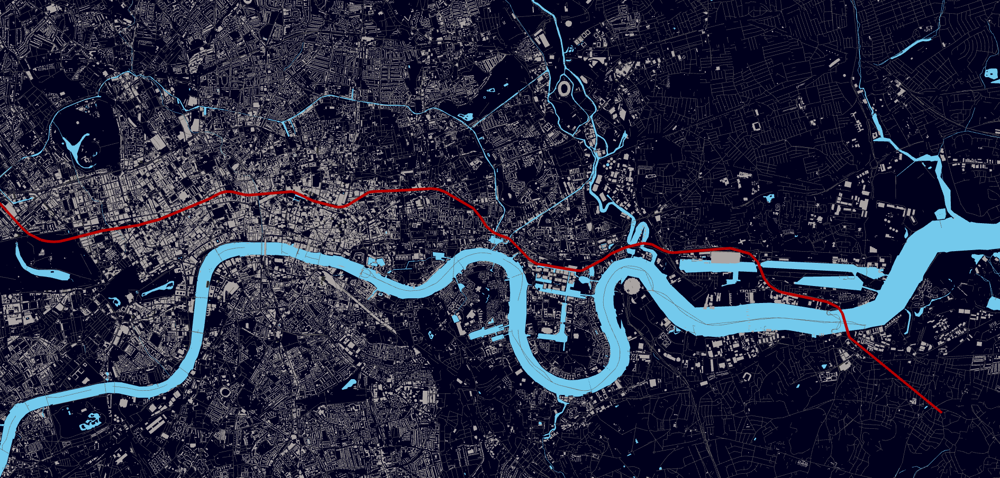
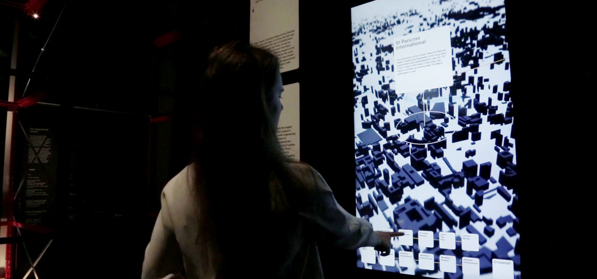
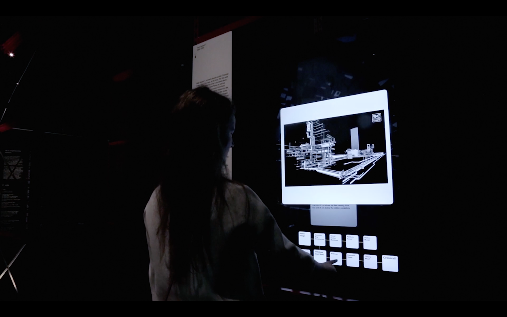
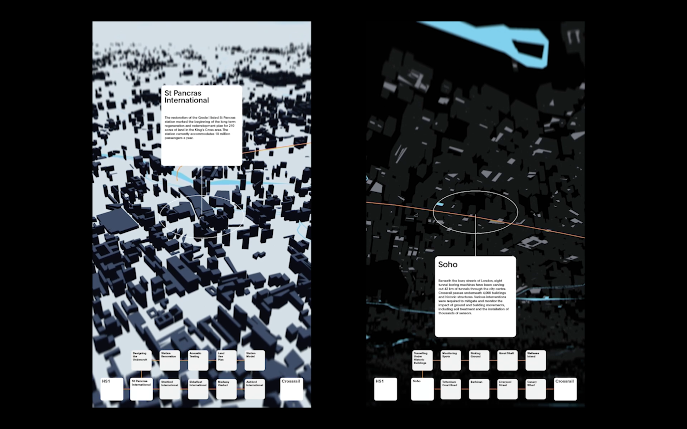
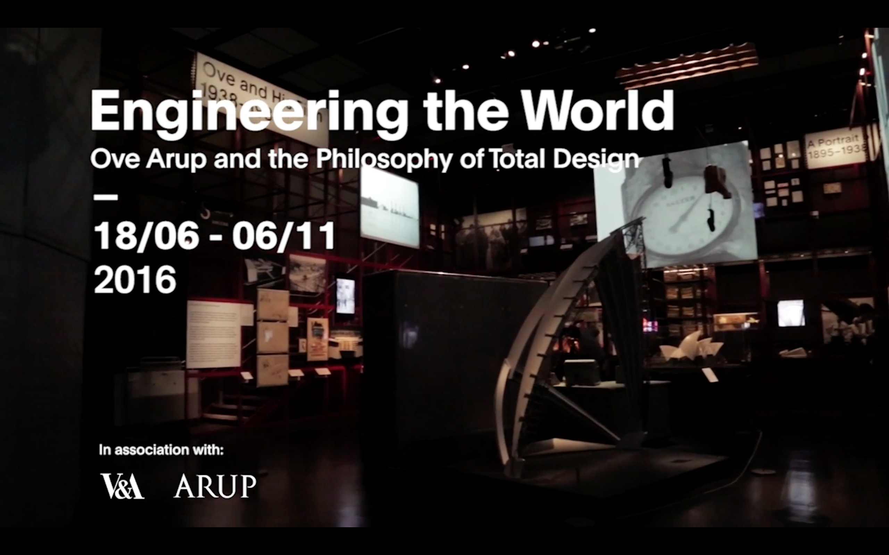

This installation was created for the Engineering the World Exhibition, commissioned by Arup in collaboration with the Victoria and Albert Museum in London. The installation featured an interactive touchscreen and large-scale projection, providing visitors with an immersive exploration of the High Speed 1 and Crossrail Projects. I wrote the software in openFrameworks and collaborated closely with the creative team.




